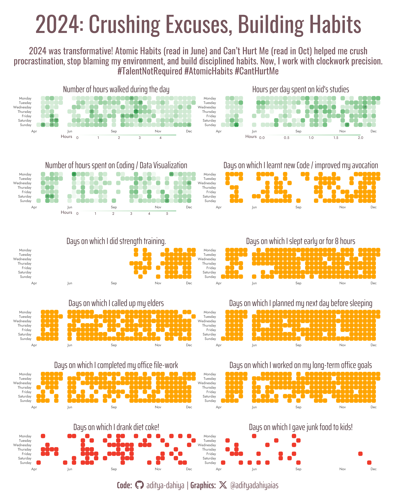

Building GitHub style timeseries charts for daily habits in 2024, building cutstom functions, including geom_rtile() for a geom_tile with rounded corners.
Data Visualization
Author
Aditya Dahiya
Published
December 31, 2024

A GitHub contributions style plot for habits tracked during 2024.
Loading Libraries
This code loads several R packages, each serving a specific purpose to enhance data visualization and analysis. tidyverse is used for data wrangling, gt for creating beautiful tables, and ggiraph for interactive graphics. showtext allows the use of custom fonts in plots, while fontawesome provides access to icons and fonts. janitor cleans raw data, patchwork helps combine multiple plots, and ggtext adds custom text formatting in ggplot2 visualizations.
Code
# Loading the relevant packageslibrary(tidyverse) # Data Wranglinglibrary(gt) # Displaying beautiful tableslibrary(ggiraph) # Interactive Graphicslibrary(showtext) # Display fancy text in ggplot2library(fontawesome) # Icons and Fonts library(janitor) # Cleaning tidying raw datalibrary(patchwork) # Composing plots in Rlibrary(ggtext) # Displaying custom text in ggplot2
Visualization Parameters
This code sets up fonts, colors, and captions for a custom plot with a motivational theme inspired by books like Atomic Habits and Can’t Hurt Me. It uses Google Fonts for titles, captions, and plot text, extracts a color palette from a book cover using imgpalr, and defines colors for text, highlights, and backgrounds. Social media icons and usernames are styled with Font Awesome, and the final captions combine code credits and hashtags, while titles and subtitles convey a motivational message.
Code
# Font for titlesfont_add_google("Oswald",family ="title_font") # Font for the captionfont_add_google("Saira Extra Condensed",family ="caption_font") # Font for plot textfont_add_google("Jost",family ="body_font") showtext_auto()# Extract a colour palette from the Cover of Book: # Can't Hurt Me by David Goggins# url <- "https://m.media-amazon.com/images/I/81gTRv2HXrL._UF1000,1000_QL80_.jpg"# logo1 <- magick::image_read(url)# set.seed(42)# magick::image_write(# logo1,# path = here::here("data", "temp_my_year_2024.jpg")# )# mypal <- imgpalr::image_pal(# file = here::here("data", "temp_my_year_2024.jpg"),# type = "qual",# n = 10# )# mypal |> seecolor::print_color()# unlink(here::here("data", "temp_my_year_2024.jpg"))# Manually write it down to avoid randomness and re-run timemypal <-c("#E2E3E9", "#7A8162", "#75555C", "#3D302A","#292326", "#FFA400", "#7A6981", "#7C8C66","#ACA2BB", "#BED0CF", "#EF3B2C", "#41AB5D")# A base Colourbg_col <-"white"seecolor::print_color(bg_col)# Colour for highlighted texttext_hil <- mypal[3]seecolor::print_color(text_hil)# Colour for the texttext_col <- colorspace::darken(mypal[3], 0.3)seecolor::print_color(text_col)# Define Base Text Sizebts <-40# Caption stuff for the plotsysfonts::font_add(family ="Font Awesome 6 Brands",regular = here::here("docs", "Font Awesome 6 Brands-Regular-400.otf"))github <-""github_username <-"aditya-dahiya"xtwitter <-""xtwitter_username <-"@adityadahiyaias"social_caption_1 <- glue::glue("<span style='font-family:\"Font Awesome 6 Brands\";'>{github};</span> <span style='color: {text_hil}'>{github_username} </span>")social_caption_2 <- glue::glue("<span style='font-family:\"Font Awesome 6 Brands\";'>{xtwitter};</span> <span style='color: {text_hil}'>{xtwitter_username}</span>")plot_caption <-paste0("**Code:** ", social_caption_1, " | **Graphics:** ", social_caption_2 )rm(github, github_username, xtwitter, xtwitter_username, social_caption_1, social_caption_2)# Add text to plot-------------------------------------------------plot_title <-"2024: Crushing Excuses, Building Habits"plot_subtitle <-str_wrap("2024 was transformative! Atomic Habits (read in June) and Can’t Hurt Me (read in Oct) helped me crush procrastination, stop blaming my environment, and build disciplined habits. Now, I work with clockwork precision.", 115)plot_subtitle <-paste0( plot_subtitle, "\n","#TalentNotRequired #AtomicHabits #CantHurtMe" )
Loading the data, E.D.A., and cleaning the names.
(please set the working directory to your custom location)
This code dynamically loads and processes multiple CSV files from a specified directory (loop_habits). It lists all CSV files, generates object names based on file names, and reads each file into R as a data frame. The janitor::clean_names function is applied to standardize column names for easier data handling. Using purrr::walk2 and purrr::walk, the data is loaded, cleaned, and reassigned efficiently, making the environment organized and ready for analysis. Temporary variables are removed afterward to maintain a clean workspace.
Code
# Set the working directory (I didnt want to host raw data on GitHub)list.files("loop_habits")# Define the directory containing the CSV filesdirectory <-"loop_habits"# List all CSV files in the directorycsv_files <-list.files(path = directory, pattern ="\\.csv$", full.names =TRUE )# Extract base names (without file extension) to use as object namesfile_names <- tools::file_path_sans_ext(basename(csv_files)) |>tolower()# Read each CSV file and assign it to an object with the corresponding namepurrr::walk2( csv_files, file_names, ~assign(.y, read_csv(.x), envir = .GlobalEnv) )# Apply janitor::clean_names() to all created objectspurrr::walk( file_names, ~ { cleaned_data <-get(.x) |>clean_names() # Retrieve object, clean namesassign(.x, cleaned_data, envir = .GlobalEnv) # Reassign cleaned data back to the same object } )# Remove the temporary filesrm(csv_files, directory, file_names)
Cleaning up the data and keeping only the relevant variables
Adding date, day of week, week number, month and year for each row separately to aid in GitHub style plot.
This code processes and transforms two datasets, habits and checkmarks, for habit tracking. The habits dataset is cleaned by selecting relevant columns, formatting numeric fields, renaming variables, and updating descriptions for clarity using conditional rules. In the checkmarks dataset, new time-based variables like day of the week and week number are derived, and units are adjusted for consistency. Logical values (TRUE/FALSE) are assigned to specific columns using custom functions, ensuring the data is well-structured for further analysis and visualization.
Code
# A custom function to convert some data into true falseconvert_discrete <-function(x){if_else(x ==2, TRUE, FALSE)}negative_discrete <-function(x){if_else( x ==-1,true =FALSE,false =if_else( x ==0,true =NA,false =TRUE ) )}# Variable I want to convert to TRUE or FALSEvars_to_dicretize <-c("strength_training", "slept_8_hr", "family_tel_calls","office_goals", "plan_next_day", "daily_filework","learnt_new_code")vars_to_negative_dicretize <-c("diet_coke_today", "aryan_junk_food")checkmarks <- checkmarks |>mutate(day_of_week =wday(date, label = T, abbr = F),day_number =yday(date),week_number =week(date),month_year =month(date, label =TRUE),walk_cycle = walk_cycle /1000,date =format(date, "%d %B"),id =row_number() ) |>mutate(day_of_week =fct_relevel( day_of_week,"Sunday", "Saturday", "Friday","Thursday", "Wednesday", "Tuesday","Monday" ) ) |>mutate(across(.cols =all_of(vars_to_dicretize),.fns = convert_discrete ),across(.cols =all_of(vars_to_negative_dicretize),.fns = negative_discrete ) )
Exploring the raw data to make a beautiful table in {gt} tables
This code creates a visually appealing table summarizing the habits tracked in 2024 using the gt package. Column labels are customized for better clarity, renaming fields like “position” to “S. No.” and “num_repetitions” to “Target number of repetitions.” A header is added with a title and subtitle, providing context about the data. Finally, the gtExtras::gt_theme_espn() theme is applied, giving the table a polished and professional appearance reminiscent of ESPN’s design style.
Code
habits <-structure(list(position =c(1, 2, 3, 4, 5, 6, 7, 8, 9, 10, 11, 12), name =c("Walk/Cycle", "Strength Training", "Slept 8 hr?", "Family Tel Calls", "Kid Studies", "Office Goals", "Plan next day", "Daily Filework", "DataViz Coding", "Learnt new code?", "Diet Coke today", "Kids Junk Food"), description =c("Did you do strength training today?", "Did you do exercise today with Fitness Blender?", "Did you sleep early / enough last night?", "Did you call Grand-parents and Parents?", "How much time did you spend studying with kids today?", "Did you work towards your long term office goals today?", "Did you create your work/avocation schedule for tomorrow?", "Did you finish you files for the day", "How many hours did you code for data visualization today?", "Did you study any R Target Book or learn new code today?", "Did you drink Diet Coke today?", "Did you give junk food to kids today?"), num_repetitions =c(1, 3, 1, 1, 1, 5, 1, 1, 1, 5, 1, 1), interval =c("Daily", "Weekly", "Daily", "Daily", "Daily", "Weekly", "Daily", "Daily", "Daily", "Weekly", "Weekly", "Weekly")), row.names =c(NA, -12L), class =c("tbl_df", "tbl", "data.frame"))habits |>gt() |>cols_label(position ="S. No.",name ="Name of the Habit",description ="Description / Question",num_repetitions ="Target number of repetitions",interval ="Frequency" ) |>tab_header(title ="My Atomic Habits (2024)",subtitle ="The list of habits I tracked for myself in the year 2024", ) |> gtExtras::gt_theme_espn()
Table 1: The different habits that I tracked
My Atomic Habits (2024)
The list of habits I tracked for myself in the year 2024
S. No.
Name of the Habit
Description / Question
Target number of repetitions
Frequency
1
Walk/Cycle
Did you do strength training today?
1
Daily
2
Strength Training
Did you do exercise today with Fitness Blender?
3
Weekly
3
Slept 8 hr?
Did you sleep early / enough last night?
1
Daily
4
Family Tel Calls
Did you call Grand-parents and Parents?
1
Daily
5
Kid Studies
How much time did you spend studying with kids today?
1
Daily
6
Office Goals
Did you work towards your long term office goals today?
5
Weekly
7
Plan next day
Did you create your work/avocation schedule for tomorrow?
1
Daily
8
Daily Filework
Did you finish you files for the day
1
Daily
9
DataViz Coding
How many hours did you code for data visualization today?
1
Daily
10
Learnt new code?
Did you study any R Target Book or learn new code today?
5
Weekly
11
Diet Coke today
Did you drink Diet Coke today?
1
Weekly
12
Kids Junk Food
Did you give junk food to kids today?
1
Weekly
Writing Custom functions
Note
Key Learning: Using Tidy Evaluation for Dynamic Column Referencing in Tidyverse Functions
When writing custom functions that involve dynamically referencing variable names in tidyverse functions (e.g., mutate, filter, or select), it’s essential to use tidy evaluation. Tidyverse functions typically expect bare variable names, but inside a custom function, column names are usually passed as strings. To handle this, use the rlang package functions like sym() to convert strings into symbols and !! to unquote these symbols, making them usable as column references. For instance, mutate(!!sym(var_name) := !!sym(var_name) * factor) allows the column name given by var_name to be dynamically transformed. The := operator is necessary for creating or modifying columns dynamically. This approach ensures that variable names passed as arguments to your custom function integrate seamlessly with tidyverse workflows.
Write a custom function geom_rtile() for plotting geom_tile() with rounded corners
This code defines a custom ggplot2 geometry, geom_rtile, to create rounded tiles for visualizations. It uses the ggproto object GeomRtile, extending functionality from statebins:::GeomRrect. Rounded tiles are achieved by introducing a radius parameter for controlling corner curvature. The setup_data function calculates tile dimensions dynamically based on provided or default values. This geometry supports essential aesthetics like fill, size, and alpha, offering a flexible and visually distinct alternative to traditional rectangular tiles for data visualization.
Code
# Custom functions: creating a geom_rtile()# Credits: https://stackoverflow.com/questions/64355877/round-corners-in-ggplots-geom-tile-possible`%||%`<-function(a, b) {if (is.null(a)) b else a}GeomRtile <-ggproto("GeomRtile", statebins:::GeomRrect, # 1) only change compared to ggplot2:::GeomTileextra_params =c("na.rm"),setup_data =function(data, params) { data$width <- data$width %||% params$width %||%resolution(data$x, FALSE) data$height <- data$height %||% params$height %||%resolution(data$y, FALSE)transform(data,xmin = x - width /2, xmax = x + width /2, width =NULL,ymin = y - height /2, ymax = y + height /2, height =NULL ) },default_aes =aes(fill ="grey20", colour =NA, size =0.1, linetype =1,alpha =NA, width =NA, height =NA ),required_aes =c("x", "y"),# These aes columns are created by setup_data(). They need to be listed here so# that GeomRect$handle_na() properly removes any bars that fall outside the defined# limits, not just those for which x and y are outside the limitsnon_missing_aes =c("xmin", "xmax", "ymin", "ymax"),draw_key = draw_key_polygon)geom_rtile <-function(mapping =NULL, data =NULL,stat ="identity", position ="identity",radius = grid::unit(6, "pt"), # 2) add radius argument ...,na.rm =FALSE,show.legend =NA,inherit.aes =TRUE) {layer(data = data,mapping = mapping,stat = stat,geom = GeomRtile, # 3) use ggproto object hereposition = position,show.legend = show.legend,inherit.aes = inherit.aes,params = rlang::list2(radius = radius,na.rm = na.rm, ... ) )}
Write a custom function of plotting in {ggplot2} for using in each variable.
This code defines a custom plotting function, plot_custom, for creating facet plots of habit tracking data. It dynamically adjusts data transformations and visual aesthetics based on the provided variable. The function highlights key days using rounded tiles with geom_rtile and annotates them with values and dates. Aesthetic parameters, including scales, labels, and themes, are finely tuned for clarity and elegance. The function is versatile, allowing customization of the facet title, legend, cutoff values, and transformation factors, ensuring tailored and visually appealing visualizations.
This code creates a series of customized visualizations for habit tracking using the plot_custom function. Each plot highlights a specific habit or activity, categorized as either continuous (e.g., hours walked, coding time) or discrete (e.g., yes/no responses for tasks like planning the day or strength training). Continuous variables use gradient scales to represent hours, while discrete variables emphasize yes/no responses with a binary gradient. Tailored aesthetics, such as titles and cut-off values, ensure the plots are meaningful and visually engaging for habit analysis.
Code
names(checkmarks)########### CONTINUOUS VARIABLES ########################-------------------------------------------------------g1 <-plot_custom(var_name ="walk_cycle",facet_title ="Number of hours walked during the day",legend_title ="Hours",cut_off_val =3) +scale_fill_gradient2(low ="white", high = mypal[12],na.value ="transparent" )#-------------------------------------------------------g2 <-plot_custom(var_name ="aryan_studies",facet_title ="Hours per day spent on kid's studies",legend_title ="Hours",transform_factor =0.001,cut_off_val =1.5) +scale_fill_gradient2(low ="white", high = mypal[12],na.value ="transparent" )#------------------------------------------------------g3 <-plot_custom(var_name ="data_viz_coding",facet_title ="Number of hours spent on Coding / Data Visualization",legend_title ="Hours",cut_off_val =4,transform_factor =0.001) +scale_fill_gradient2(low ="white", high = mypal[12],na.value ="transparent" )########### DISCRETE VARIABLES #######################g4 <-plot_custom(var_name ="learnt_new_code",facet_title ="Days on which I learnt new Code / improved my avocation",legend_title ="Yes / No",cut_off_val =2) +scale_fill_gradient(low ="white", high = mypal[6],na.value ="transparent" ) +guides(fill ="none")g5 <-plot_custom(var_name ="strength_training",facet_title ="Days on which I did strength training.",legend_title ="Yes / No",cut_off_val =2) +scale_fill_gradient(low ="white", high = mypal[6],na.value ="transparent" ) +guides(fill ="none")g6 <-plot_custom(var_name ="slept_8_hr",facet_title ="Days on which I slept early or for 8 hours",legend_title ="Yes / No",cut_off_val =2) +scale_fill_gradient(low ="white", high = mypal[6],na.value ="transparent" ) +guides(fill ="none")g7 <-plot_custom(var_name ="family_tel_calls",facet_title ="Days on which I called up my elders",legend_title ="Yes / No",cut_off_val =2) +scale_fill_gradient(low ="white", high = mypal[6],na.value ="transparent" ) +guides(fill ="none")g8 <-plot_custom(var_name ="plan_next_day",facet_title ="Days on which I planned my next day before sleeping",legend_title ="Yes / No",cut_off_val =2) +scale_fill_gradient(low ="white", high = mypal[6],na.value ="transparent" ) +guides(fill ="none")g9 <-plot_custom(var_name ="daily_filework",facet_title ="Days on which I completed my office file-work",legend_title ="Yes / No",cut_off_val =2) +scale_fill_gradient(low ="white", high = mypal[6],na.value ="transparent" ) +guides(fill ="none")g10 <-plot_custom(var_name ="office_goals",facet_title ="Days on which I worked on my long-term office goals",legend_title ="Yes / No",cut_off_val =2) +scale_fill_gradient(low ="white", high = mypal[6],na.value ="transparent" ) +guides(fill ="none")g11 <-plot_custom(var_name ="diet_coke_today",facet_title ="Days on which I drank diet coke!",legend_title ="Yes / No",cut_off_val =2) +scale_fill_gradient(low ="white", high = mypal[11],na.value ="transparent" ) +guides(fill ="none")g12 <-plot_custom(var_name ="aryan_junk_food",facet_title ="Days on which I gave junk food to kids!",legend_title ="Yes / No",cut_off_val =2) +scale_fill_gradient(low ="white", high = mypal[11],na.value ="transparent" ) +guides(fill ="none")
Composing the plot using {patchwork}
This code combines the individual habit-tracking visualizations (g1 to g12) into a cohesive multi-panel plot using wrap_plots from the patchwork package. The layout arranges the plots in two columns, collects shared y-axes, and includes a unified title, subtitle, and caption for context. Custom themes ensure consistent and polished styling. The final plot is saved as a high-resolution PNG file (my_year_2024.png) with specified dimensions and background color, making it ready for sharing or publication.